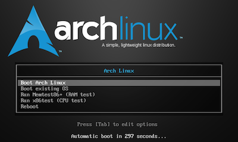

Style
OS (pronounced "oss")
Out and About (AKA at a coffee shop)

Look like everyone else who doesn't look like everyone else
Post-PC, Pre-Alpha, Real-Time, Cloud-Scale, NOW
You can't act like someone is telling you how to act
Because groups of three are for bourgeoisie consumer sheep
Customizes the colors, typography, and layout of slide content.
<link rel="stylesheet" href="/path/to/css/style-theme.css">Defines transitions between slides using CSS3 transitions. Less capable browsers fall back to cutaways. But you aren’t using those browsers to give your presentations, are you…
<link rel="stylesheet" href="/path/to/css/transition-theme.css">Core gives you basic slide functionality with left and right arrow navigation, but you may want more. Here are the ones included in this deck:
That last slide had a few steps. To create substeps in slides, just nest them:
<section class="slide">
<h2>Extensions</h2>
<p>Core gives you basic slide functionality...</p>
<ul>
<li class="slide">
<h3>deck.goto</h3>
<p>Adds a shortcut key to jump to any slide number...</p>
</li>
<li class="slide">...</li>
<li class="slide">...</li>
<li class="slide">...</li>
</ul>
</section><img src="http://placekitten.com/600/375" alt="Kitties">Food is an important part of a balanced diet.
Fran Lebowitz
<blockquote cite="http://example.org">
<p>Food is an important part of a balanced diet.</p>
<p><cite>Fran Lebowitz</cite></p>
</blockquote>Embed videos from your favorite online video service or with an HTML5 video element.
<iframe src="http://player.vimeo.com/video/1063136?title=0&byline=0&portrait=0" width="400" height="225" frameborder="0"></iframe>If you want to learn about making your own themes, extending deck.js, and more, check out the documentation.
/
#